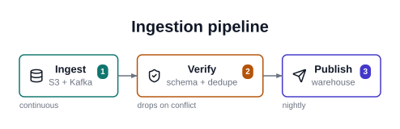

prism
Declarative YAML to SVG diagrams
prism turns a short YAML spec into a single, well-designed SVG diagram. You describe what the picture means; prism decides the geometry, spacing, typography and colour.
type: flow
title: Ingestion pipeline
steps:
- {label: Ingest, sublabel: S3 + Kafka, icon: database, accent: 0}
- {label: Verify, sublabel: schema + dedupe, icon: shield-check, accent: 1}
- {label: Publish, sublabel: warehouse, icon: send, accent: 2}
prism render pipeline.yaml -o pipeline.svgWhy this exists
Diagram-as-code tools — Mermaid, PlantUML, D2, Graphviz — model graph topology. They are very good at that. But a great many explanatory pictures are not graphs: pyramids, funnels, quadrants, timelines, comparisons, radial hubs. Those tools have no vocabulary for them, and theming is an afterthought, so the output reads as an engineering diagram rather than an explainer.
At the other end, tools like Napkin AI have exactly that vocabulary but ship it as closed SaaS with no library surface.
prism is the missing middle: an open, template-rich, themeable, agent-first library that takes a declarative spec and renders a designed picture.
Design in three sentences
One spec, one diagram. No multi-diagram documents, no charts, no prose-to-diagram — prism never calls a language model. An agent (or a person) writes the spec; prism deterministically renders it.
Deep templates, no nesting. Complexity lives inside an archetype — rich typed nodes, swimlanes, era bands, axes — plus one generic groups: construct. Recursive schemas are where small models fail, and good-looking nesting needs per-combination tuning that never converges.
Themes are data. A theme is a token set in YAML. Archetypes read tokens only; a literal colour inside an archetype is a bug.
Install
pip install prism-svg # import name is `prism`Its only runtime dependencies are tesserax (pure-Python SVG and layout), PyYAML and pydantic.
Use it
import prism
prism.render("pipeline.yaml", "pipeline.svg")
svg = prism.render_str(spec_text) # returns the SVG as a stringprism render spec.yaml -o out.svg
prism archetypes # list the catalog
prism themes # list bundled themes
prism icons # list available icon names
prism schema flow # JSON Schema, for tool callingIn a notebook or a Quarto document, the result renders inline — see In Quarto.
What’s here
- Catalog — all ten archetypes, each with the spec that produced it.
- Themes — the four bundled themes, and how to write your own.
- For agents — the closed vocabulary, JSON Schema, and error design.
One detail worth knowing
Every label in a prism diagram is measured against vendored font metrics before its box is drawn. That sounds like a footnote; it is the difference between a diagram and a mess. The usual shortcut — estimating text width as characters x size x 0.6 — is wrong by +116% on lllll and −28% on MMMMM, so boxes come out either absurdly padded or overflowing their borders.
prism vendors advance-width tables for the three font stacks that have metric-compatible clones on every platform (Arial, Times New Roman, Courier New), wraps text itself, and hands true bounds to the layout engine. That is also why typography.family and typography.weight are restricted: prism only offers what it can measure.